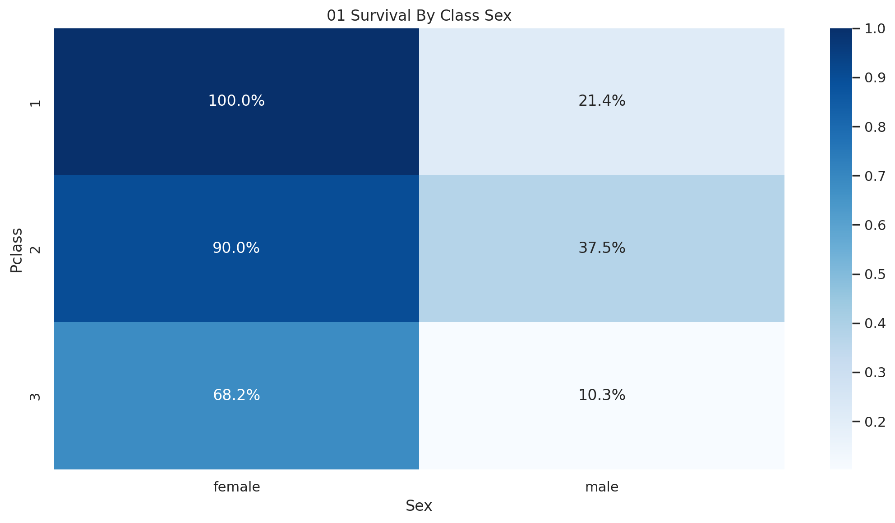
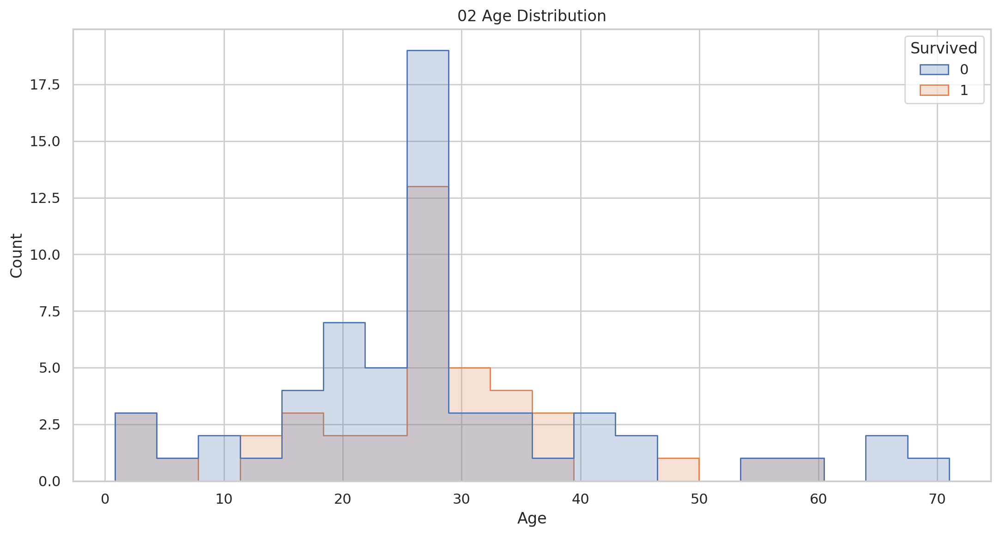
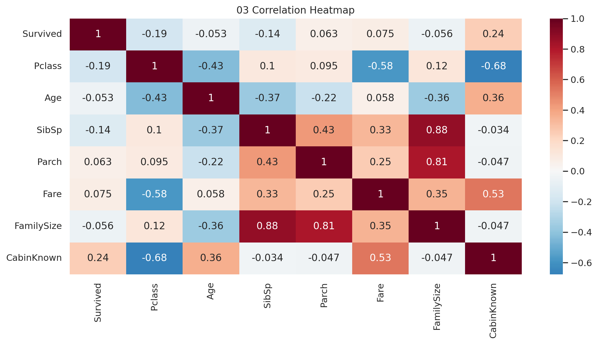
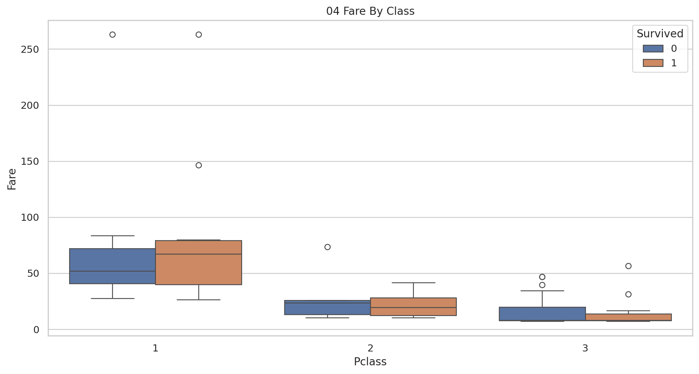
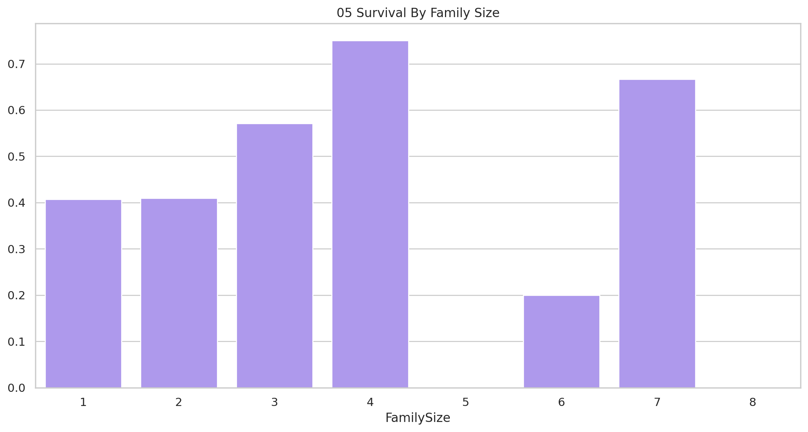
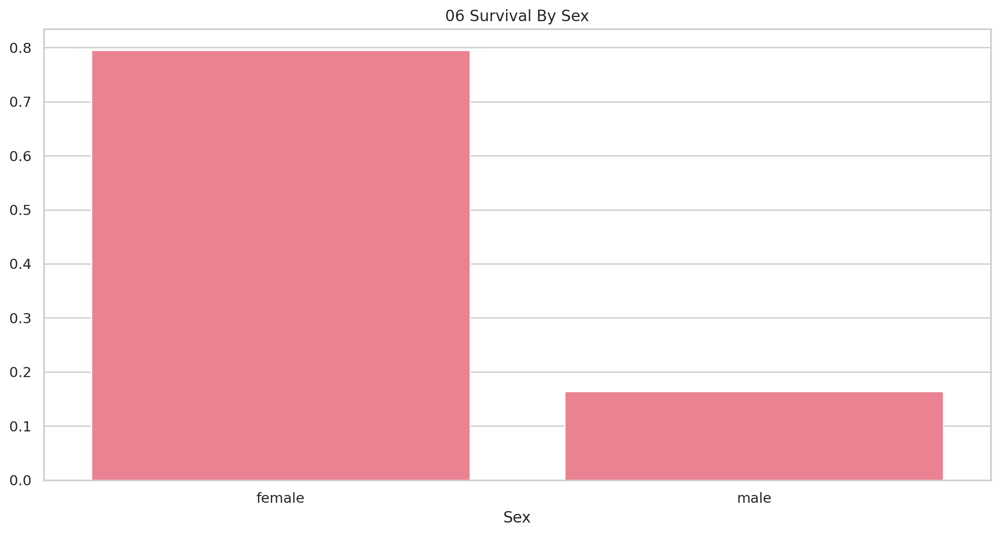
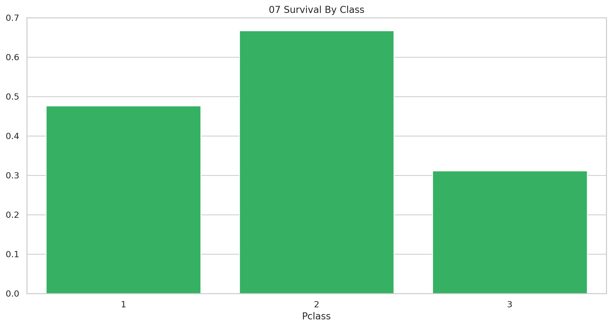
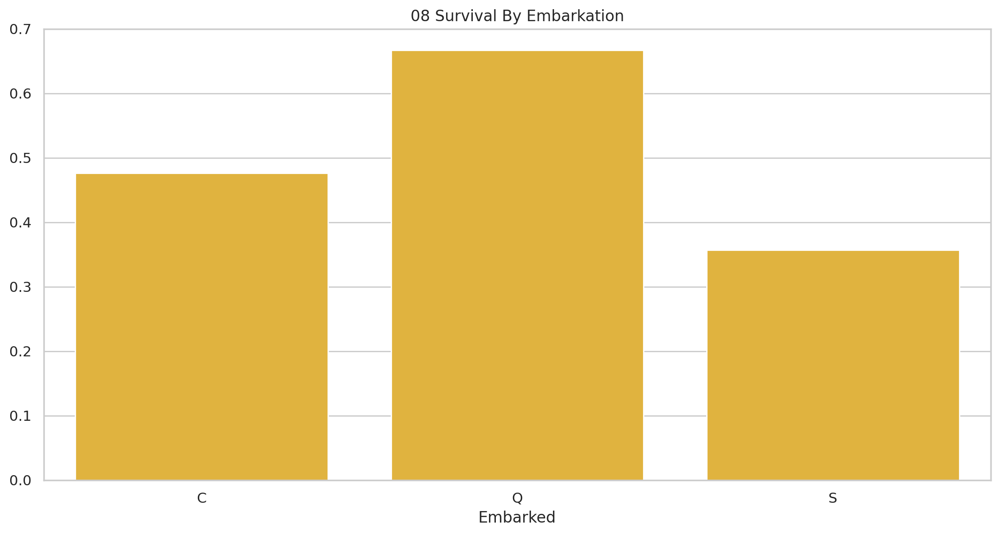

Passenger-level survival patterns across class, sex, age, and family structure.
Executive Summary
This report converts the supplied project data into decision-ready findings and supporting evidence.
Findings
Overall survival is 41.0%.
Female survival is 79.5% versus 16.4% for males.
First-class survival is 47.6% versus 31.1% in third class.
Survivors paid £6.19 more on average.
Q has the highest observed embarkation-port survival rate.
Family size 4 has the highest observed survival rate.
Methodology
The passenger dataset was analyzed descriptively. Missing ages were filled with the sample median for demographic charts; cabin availability was represented as a binary feature. Results are limited to the supplied sample.
Visual Evidence

01 Survival By Class Sex

02 Age Distribution

03 Correlation Heatmap

04 Fare By Class

05 Survival By Family Size

06 Survival By Sex

07 Survival By Class

08 Survival By Embarkation
Recommendations
Prioritize the most material measurable opportunity.
Track the core KPIs in the accompanying dashboard.
Refresh the analysis before implementing high-impact decisions.